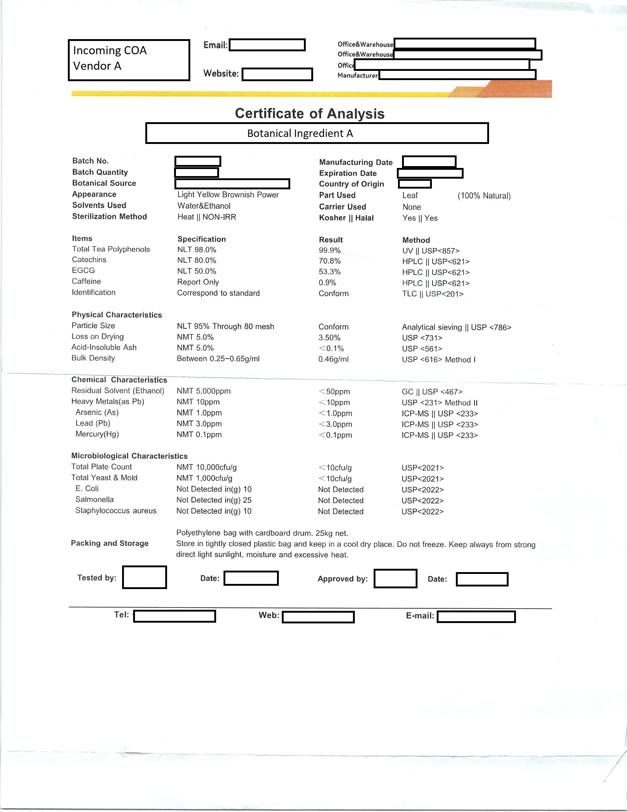
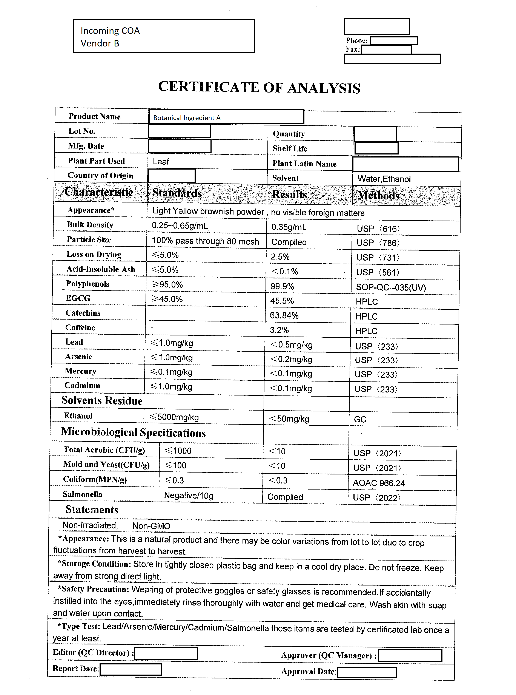
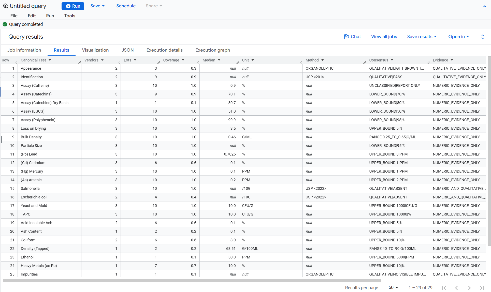
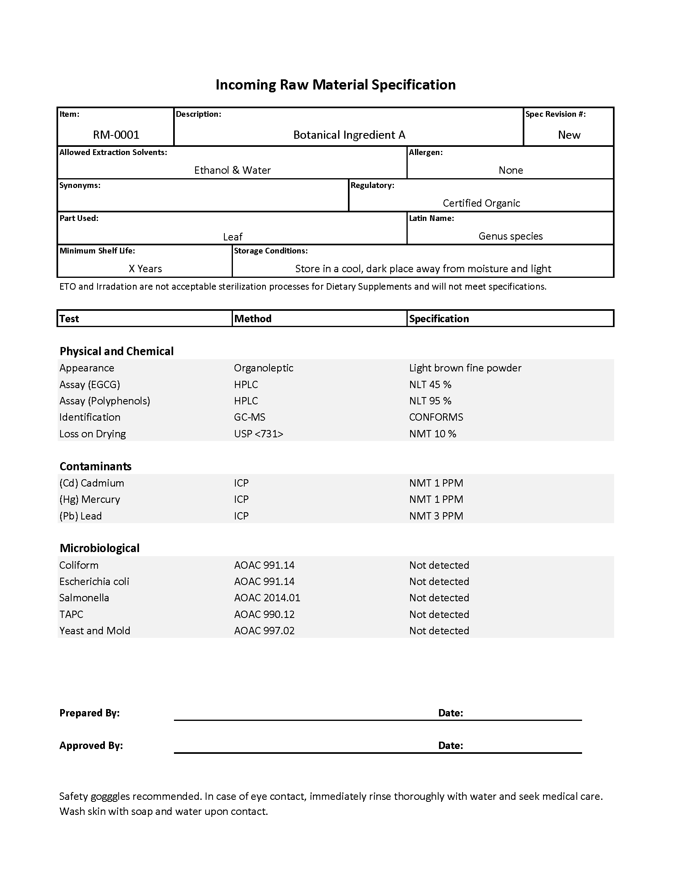

01
General controls
Identity and microbiological requirements established a baseline, but not a complete material profile.
QUALITY DATA · SPECIFICATION GOVERNANCE
After a raw material passed the company’s existing incoming controls but failed in production, I used years of supplier evidence to build defensible, material-specific specifications and a stronger foundation for incoming quality control.
THE STARTING POINT
The company had purchased and used FDA-regulated raw materials for years. Blanket identity and microbiological specifications supported general incoming acceptance, but they did not consistently govern potency or physical characteristics such as granularity and density.
That distinction mattered because a material could satisfy the defined incoming panel and still behave differently in a specific production process. The missing question was not simply, “Is this material acceptable?” It was, “Acceptable for what product and process?”
The organization needed defensible material-level standards that built on its existing controls, strengthened incoming QC, and carried years of operational experience into a more controlled era of compliance.
01
Identity and microbiological requirements established a baseline, but not a complete material profile.
02
Granularity, density, potency, and other characteristics could change how an accepted material performed.
03
Years of vendor documents recorded what had actually been purchased, tested, released, and used.
04
Quality needed traceable standards that Purchasing, Warehouse, production, and future systems could share.
THE TRIGGER
Historical reference
Passed existing panel
Outcome · Successful tablet behavior
Released material
Passed existing panel
Outcome · Tablet run failure
Project thesis
Existing controls confirmed general acceptance, but not fitness for this manufacturing process.SYSTEM ARCHITECTURE
It was not enough to collect vendor PDFs or copy their limits into an internal form. The framework had to preserve what suppliers originally reported, make unlike records comparable, distinguish evidence from company policy, and show where expert judgment was still required.
Historical evidence informed each recommendation, but did not automatically become policy. That separation kept internal standards explicit, traceable, and independent of any single supplier while still honoring what the organization had actually purchased and used.
PLATE 01 · QUALITY-SYSTEM ARCHITECTURE
Raw evidence moves through distinct transformation layers before becoming a governed internal specification.
Select a stage to explore
01 · SOURCE
Original lot-level tests, methods, units, results, and vendor specification language.
02 · STRUCTURE
Convert fragmented documents into consistent, row-level analytical records.
03 · NORMALIZE
Standardize test concepts, terminology, methods, units, and result semantics.
04 · ANALYZE
Evaluate historical coverage, distributions, vendor agreement, methods, and confidence.
05 · DECIDE
Combine historical evidence with established internal requirements to generate traceable recommendations.
06 · GOVERN
Prepare a reviewable standard for Quality approval, controlled maintenance, and ERP publication.
SYSTEM OUTPUT
Prototype Internal Specification
EXHIBIT 01 · SOURCE COA COMPARISON
Because the materials were already established in the business, the defensible starting point was historical Certificates of Analysis from approved suppliers. Those documents showed the grades, characteristics, methods, limits, and testing panels that had actually accompanied accepted lots.
Every supplier organized that evidence differently. Some reported grouped analytical panels; others listed individual characteristics. Some tested beyond the company’s internal panel. Even equivalent quality concepts could look unrelated without interpretation.
The first design principle was preservation. Before deciding what the company should require, every analytical record retained what the supplier actually called, measured, and certified.

Accepted incoming quality evidence using one supplier's terminology, analytical structure, and reporting conventions.

The same legacy internal part number represented through a different document structure, terminology, and analytical organization.
Structured Records
Individual specification documents were transformed into a structured analytical dataset where every test result existed as its own record. This separated document formatting from the underlying information and created a foundation for consistent analysis.
Each observation retained links back to its original supplier, material, lot, analytical method, units, specification language, and supporting document. Nothing was discarded; the information was reorganized into a form that could be queried, profiled, and governed.
By treating every result as structured data rather than text on a document, the framework enabled historical analysis at a scale that would have been impractical through manual review alone.
EXHIBIT 02 · STRUCTURED EVIDENCE RECORDS
The same anonymized part number shown in the source COAs and prototype specification, now represented as standardized analytical records.

EXHIBIT 03 · CANONICAL MAPPING
A single canonical name was not enough to make two records equivalent. Test method, unit, sample basis, detection limit, grade, specification language, and result semantics could all change whether the evidence belonged in the same comparison.
I developed mapping structures that distinguished the underlying analytical concept from each vendor’s expression of it. This made normalization a controlled interpretation, not a bulk text-cleaning exercise.
SOURCE TEST LANGUAGE
CANONICAL CONCEPT
Pb
Lead
Lead Content
Lead
Heavy Metals — Pb
Lead
Lead, as Pb
Lead
HISTORICAL EVIDENCE
Once records were comparable, the analysis could evaluate supplier coverage, distributions, methods, limits, potency, and physical characteristics. Numeric and qualitative results remained separate so terms such as “pass,” “conforms,” and “not detected” were not forced into false precision.
In some cases, evidence assigned to one legacy internal part number did not describe one consistently interchangeable material. Those findings could support splitting a legacy item into two part numbers rather than governing materially different inputs as though they were the same.
Historical profiling then identified where evidence supported a proposed standard, where specialist review was appropriate, and where more testing or documentation was still needed.
EXHIBIT 04 · IDENTITY RESOLUTION
One part number was not one material profile.
ASSAY / RESULT PROFILE
Observed assay result · percent
DECISION SUPPORT
Test coverage varied across observed lots. The model therefore evaluated whether enough comparable evidence existed before a recommendation could advance—keeping thin histories from appearing equally authoritative.
READY FOR APPROVAL
Evidence and rule coverage are sufficient to prepare a structured recommendation for Quality review.
REVIEW RECOMMENDED
The system identifies conflicts, unusual distributions, method differences, or other conditions requiring specialist interpretation.
INSUFFICIENT EVIDENCE
Available records do not support a defensible internal recommendation without further testing or documentation.
The purpose was not to automate Quality approval. It was to organize the evidence, expose uncertainty, identify potential material-master changes, and reduce the manual investigation required before an informed decision could be made.
EXHIBIT 05 · PROTOTYPE SPECIFICATION
After the evidence had been preserved, normalized, analyzed, and evaluated against internal rules, the system could produce a traceable recommendation for Quality review. The visible specification is the governed answer—not the entire solution.
Produced through the evidence model shown above · Portfolio version · Company information anonymized

GOVERNANCE LIFECYCLE
CONTROLLED QUALITY SYSTEM
Each approved standard remains connected to the evidence, authority, and events that can change it.
PLATE 02
CONTROL LOOP
REV 01
01
Supplier documents, incoming tests, process results, and customer needs
02
Coverage, agreement, exceptions, characteristics, and risk
03
Expert judgment resolves uncertainty and confirms material controls
04
Authorize the specification, testing panel, and part-number decisions
05
Release the controlled standard for ERP and incoming QC use
06
Watch supplier changes, failures, requests, and new test history
THE PROJECT EVOLVED
Some suppliers routinely reported tests beyond the company’s blanket internal panel. Later, customers requested some of those same tests. That sequence suggested a new use for the governed dataset: identifying materials likely to need more rigorous panels before a customer request or production issue forced the change.
OBSERVED
Additional characteristics already appeared repeatedly in market evidence.
CONFIRMED
External expectations validated that the wider evidence carried useful signals.
OPPORTUNITY
Use supplier patterns, material risk, and customer demand to prioritize QC maturity.
OUTCOMES
The work established a repeatable methodology for developing defensible internal specifications, strengthening incoming QC, surfacing material-master issues, and preparing controlled quality records for an ERP environment.
It also changed the shape of the opportunity. Historical supplier evidence could help the company do more than resolve today’s gaps; it could reveal which material controls were likely to matter next.
WHAT I LEARNED
A general incoming panel can establish baseline acceptance without capturing every characteristic that determines whether a material will succeed in a particular process. Stronger control required connecting Quality evidence to operational use.
The most important system decision was maintaining a clear separation between supplier evidence, analytical interpretation, internal policy, and final Quality approval. History could inform a standard without silently becoming the standard.
That separation made the framework defensible and auditable, while allowing new production experience, customer expectations, and supplier evidence to improve the system over time.
NEXT CASE STUDY
View ERP Evaluation & Systems Strategy →